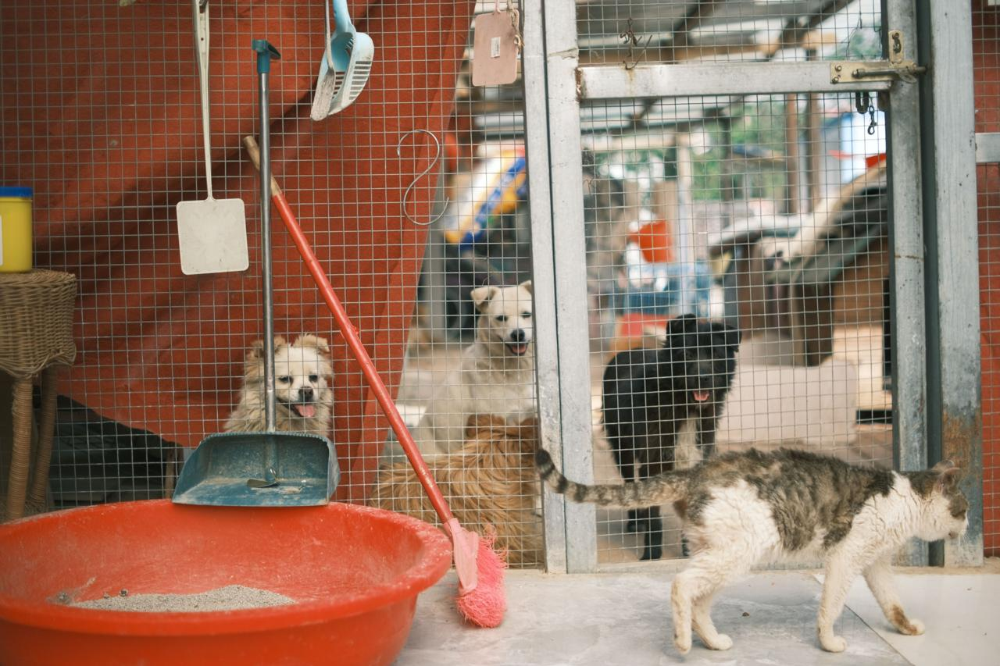

R100
Can contribute towards food and basic supplies.
Payment facility not yet available.
Every contribution helps Paws & Whiskers Animal Rescue provide rescued animals with food, shelter, veterinary care, and a safe environment while they wait for their forever homes.
Whether you make a once-off contribution, become a regular supporter, volunteer your time, or sponsor an animal, your support can make a meaningful difference.
Running an animal rescue organisation requires resources to provide proper care for rescued animals. Donations help us cover important needs and continue our rescue work.
Supporters can choose an amount that suits them. Every contribution helps us continue providing care to animals in need.
Individuals and businesses can support Paws & Whiskers by sponsoring areas of animal care. Sponsorship support can help the organisation continue providing essential services to rescued animals.
Interested individuals or businesses can contact us or submit a sponsorship enquiry.
Become a SponsorOur fundraising campaigns help raise awareness and financial support for specific animal welfare needs and community programmes.
This campaign supports the costs associated with rescuing and rehabilitating animals in need.
This campaign helps raise funds for veterinary treatment, vaccinations, and other healthcare needs.
This campaign supports educational activities that promote responsible pet ownership and animal welfare.
Financial donations are not the only way to support our work. You can also help by volunteering, adopting an animal, sharing our work, or helping with community events.
Your support can help us continue rescuing and caring for animals while working towards finding them safe and loving homes.
Contact Us